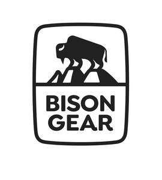

Trade Mark Journal No.2025/027 4 July 2025
UK00004216442 10 June 2025 (12)

- Class 12
- Automobile wheels; Automobile chassis; Shock absorbers for automobiles; Upholstery for automobiles; Glove boxes for automobiles; Ashtrays for vehicles; Automobile running boards; Spray prevention flaps for vehicles; Steering wheels for vehicles; Automobile tyres; Direction signals for automobiles; Automobile roof containers; Alarm systems for cars; Anti-theft devices for vehicles; Gearboxes for motor cars; Automobile roof racks; Car seats; Cigar lighters for automobiles; Automobile bodies; Head restraints for vehicles; Horns for motor cars; Children's car seats; Automobile wheel spokes; Automobile wheel hubs; Car seat canopies; Bucket seats for automobiles; Pneumatic tires for automobiles; Automobile dashboards; Safety belts for vehicles for motor cars; Brake shoes for motor cars; Coverings for car seats; Steering wheel spinners for automobiles; Armrests for automobile seats; Vehicle bonnet pins; Car-top luggage carriers; Seat cushions for the seats of vehicles; Ski racks for motor cars; Sun-blinds adapted for automobiles; Anti-theft devices for automobiles; Sun visors for automobiles; Shock absorbing springs for automobiles; Torsion bars for motor cars; Automobile chains [anti-skid for wheels]; Interior trim parts of automobiles; Brakes for motor cars; Brake segments for motor cars; Automobiles and structural parts therefor; Windscreen wipers for motor cars; Steering balls for car steering wheels; Inner tubes for pneumatic tyres for vehicle wheels; Car seat harnesses; Automobile door handles; Wheel rims [for automobiles]; Covers (Shaped -) for motor cars; Headlight wipers; Portable children’s seats for vehicles; Shaped steering wheel covers for automobiles; Glass holders for automobiles; Automotive interior trim; Window rain guards for cars; Umbrella holders for automobiles; Wheel rim protectors for automobiles; Brake linings for motor cars; Luggage racks for motor cars; Convex blind spot mirrors for automobiles; Automobile windshield sunshades; Safety harnesses for auto racing; Cushions adapted for use with car seats; Car safety seats for children; Non-skid devices for vehicle tyres; Tires (Non-skid devices for vehicle -); Automobile spare wheel holders; Spare tire carriers for vehicles; Gear shifts for automobiles; Ski carriers for cars; Anti-theft warning apparatus for motor cars; Car tidies; Tonneaus; Head-rests for car seats; Petrol tank caps for motor cars; Shift boots for motor vehicles; Air bags [safety devices for automobiles]; Car seat tidies; Safety belt covers for automobile seats; Luggage racks fitted to the bonnet; Seat safety harnesses for motor cars; Sun shields and visors for motor cars; Safety rims of rubber for the mudguards of cars; Door handle scratch guards for automobiles; Non-skid devices for automobile tires; Anti-theft locks for use on automobile steering wheels; Child restraints for vehicle seats; Drinking cup holders adapted for cars; Pet booster seats for automobiles; Seat covers [shaped] for use in automobiles; Boot tidies; Cartop canoe and kayak carrier kits; Child safety belt holders for automobile seats; Seat back organizers specially adapted for use in cars; Tonneau covers; Shelves adapted for use in vehicles; Storage containers adapted for use in vehicles; Seat covers [shaped or fitted]; vehicle camping tables; Car dashboard accessory holders; Gas bottle and cylinder holders; Car light holders; Wheel holders for mounting spare wheel panels on the boot; Car boot dividers.
BISON GEAR SPÓŁKA Z OGRANICZONĄ ODPOWIEDZIALNOŚCIĄ
Representative: Ewelina Jasion